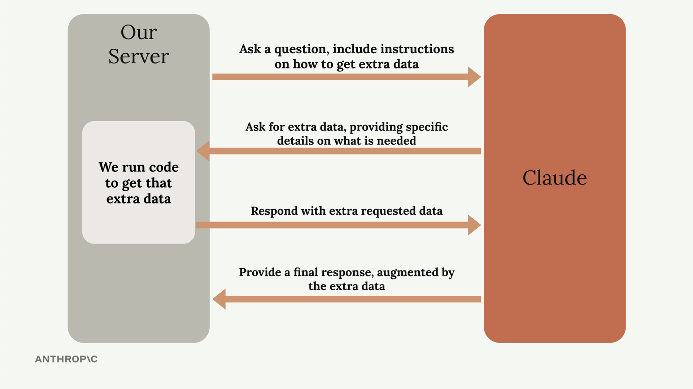
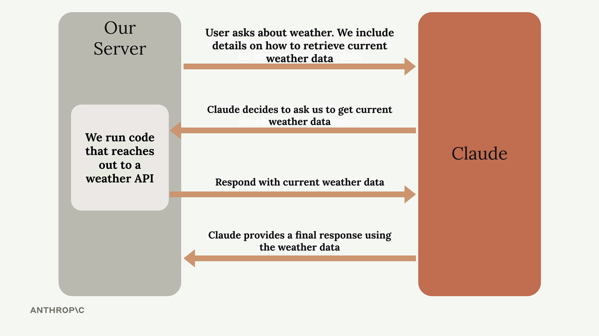

도구 사용 소개
도구를 사용하면 Claude가 외부 세계의 정보에 접근할 수 있어, 학습 데이터만으로는 알 수 없었던 것들을 넘어 그 능력을 확장할 수 있습니다. 기본적으로 Claude는 학습 데이터에 있는 정보만 알고 있으며, 최신 이벤트, 실시간 데이터, 또는 외부 시스템에는 접근할 수 없습니다. 도구 사용은 Claude가 최신 정보를 요청하고 수신하는 구조화된 방법을 만들어 이러한 한계를 해결합니다.
도구 없이는 발생하는 문제
사용자가 Claude에게 현재 정보를 물어보면 막히게 됩니다. 예를 들어, "캘리포니아주 샌프란시스코의 날씨가 어때요?"라고 묻는다면 Claude는 "죄송합니다만, 최신 날씨 정보에 접근할 수 없습니다."와 같은 답변을 해야 합니다.

이는 사람들이 Claude가 이론적으로 도움을 줄 수 있는 실시간 데이터를 필요로 할 때 답답한 사용자 경험을 만들어냅니다. 단지 현재 정보에 접근할 수 있다면 해결될 문제입니다.
도구 사용 작동 방식
도구 사용은 애플리케이션과 Claude 사이의 특정한 주고받기 패턴을 따릅니다. 전체 흐름은 다음과 같습니다:

- 초기 요청: Claude에게 질문을 보내면서 외부 소스에서 추가 데이터를 가져오는 방법에 대한 지침을 함께 전달합니다
- 도구 요청: Claude가 질문을 분석하고 추가 정보가 필요하다고 판단하면, 필요한 데이터에 대한 구체적인 세부 사항을 요청합니다
- 데이터 수집: 서버가 코드를 실행하여 외부 API 또는 데이터베이스에서 요청된 정보를 가져옵니다
- 최종 응답: 수집된 데이터를 Claude에게 다시 전송하면, Claude는 원래 질문과 최신 데이터를 모두 사용하여 완전한 응답을 생성합니다
날씨 예시 실습
날씨 질문으로 이것이 어떻게 작동하는지 살펴보겠습니다. 과정이 훨씬 더 구체적으로 이루어집니다:

사용자가 현재 날씨에 대해 물어보면, 프롬프트에 날씨 데이터를 검색하는 방법에 대한 지침을 포함합니다. Claude는 현재 정보가 필요하다고 인식하고 특정 위치의 날씨 데이터를 요청합니다. 서버는 날씨 API를 호출하여 실시간 상태를 가져오고 그 데이터를 Claude에게 전송합니다. 마지막으로 Claude는 최신 날씨 데이터와 사용자의 질문을 결합하여 정확하고 최신 응답을 제공합니다.
주요 이점
- 실시간 정보: Claude의 학습 당시 이용 불가능했던 최신 데이터에 접근
- 외부 시스템 통합: Claude를 데이터베이스, API 및 기타 서비스에 연결
- 동적 응답: 최신 가용 정보를 기반으로 답변 제공
- 구조화된 상호작용: Claude가 필요한 정보와 요청 방법을 정확히 파악
도구 사용은 Claude를 정적인 지식 기반에서 실시간 데이터를 활용할 수 있는 동적 어시스턴트로 변환합니다. 이는 날씨 데이터, 주가, 데이터베이스 쿼리 등 사용자가 필요로 할 수 있는 모든 실시간 정보를 다루는 애플리케이션 구축의 가능성을 열어줍니다.